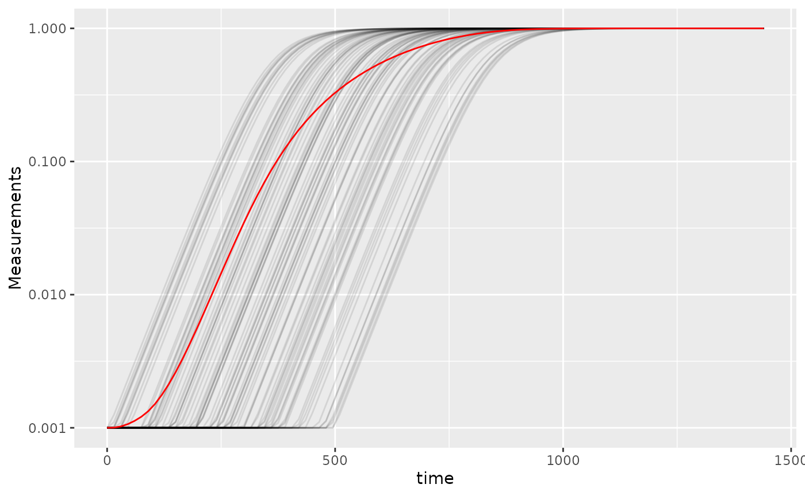
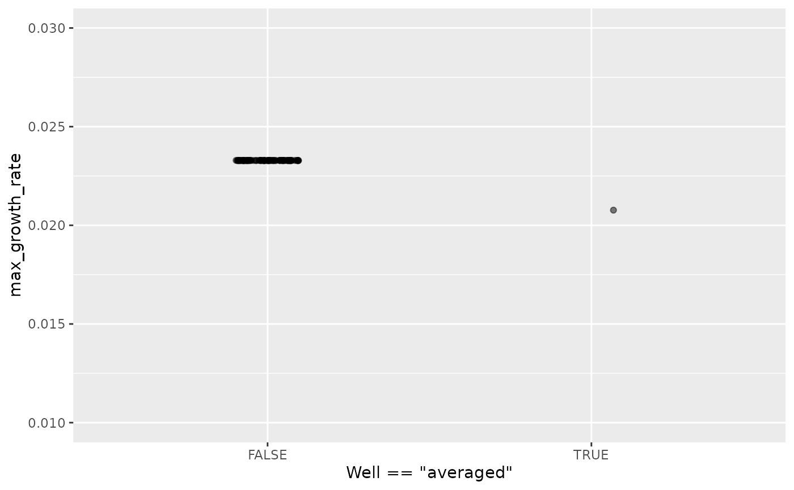
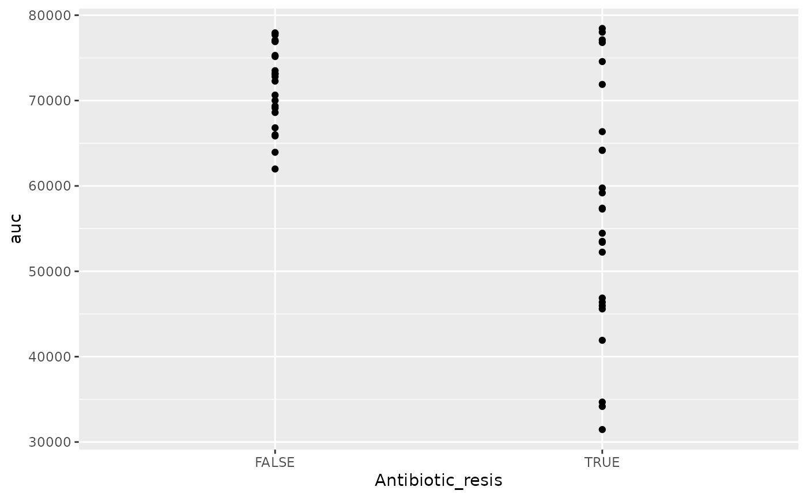

Best practices and other tips
Mike Blazanin
Source:vignettes/gc08_conclusion.Rmd
gc08_conclusion.RmdWhere are we so far?
- Introduction:
vignette("gc01_gcplyr") - Importing and reshaping data:
vignette("gc02_import_reshape") - Incorporating experimental designs:
vignette("gc03_incorporate_designs") - Pre-processing and plotting your data:
vignette("gc04_preprocess_plot") - Processing your data:
vignette("gc05_process") - Analyzing your data:
vignette("gc06_analyze") - Dealing with noise:
vignette("gc07_noise") -
Best practices and other tips:
vignette("gc08_conclusion") - Working with multiple plates:
vignette("gc09_multiple_plates") - Using make_design to generate experimental designs:
vignette("gc10_using_make_design")
So far, we’ve imported and transformed our measures, combined them with our design information, pre-processed, processed, plotted, and analyzed our data. The only things left are a few notes on best practices for running statistics, merging growth curve analyses with other data, and additional resources for analyzing growth curves.
If you haven’t already, load the necessary packages.
library(gcplyr)
#> ##
#> ## gcplyr (Version 1.12.0, Build Date: 2025-07-28)
#> ## See http://github.com/mikeblazanin/gcplyr for additional documentation
#> ## Please cite software as:
#> ## Blazanin, Michael. gcplyr: an R package for microbial growth
#> ## curve data analysis. BMC Bioinformatics 25, 232 (2024).
#> ## https://doi.org/10.1186/s12859-024-05817-3
#> ##
library(dplyr)
#>
#> Attaching package: 'dplyr'
#> The following objects are masked from 'package:stats':
#>
#> filter, lag
#> The following objects are masked from 'package:base':
#>
#> intersect, setdiff, setequal, union
library(ggplot2)Statistical analyses of growth curves data
At this point, we’ve now summarized our growth curves data into some metrics. How can we best go about drawing statistical conclusions from these data?
When should we average replicates?
I want to emphasize something we did not do in our workflow: averaging different wells together before summarization. In my opinion, averaging should only occur after summarization, not before. Why? Even wells that have the same contents (i.e. are technical replicates) can still differ in their growth due to biological variation (e.g. stochastic growth dynamics). If we average our density values at the beginning, we may introduce bias, and we will not have the ability to visualize or assess the biological variation present in our data.
Let’s look at a simple example to demonstrate this point. I’m going to simulate bacterial growth using logistic growth, which starts after a finite ‘lag period’ where the bacteria don’t grow at all.
Where is the population size, is the rate of growth, is the carrying capacity of the population, and is the lag time.
In the code below, I’ve simulated the growth of 96 different wells of bacteria. All the bacteria grow at exactly the same rate, except they differ in their lag time (how long they wait before starting to grow).
sim_dat_tdy <- make_example(vignette = 8, example = 1)Now, let’s calculate the growth rate of each well and plot the growth:
sim_dat_tdy <- mutate(group_by(sim_dat_tdy, Well),
percap_deriv = calc_deriv(y = Measurements, x = time,
percapita = TRUE, blank = 0))
# Plot the growth in our wells
ggplot(data = filter(sim_dat_tdy, Well != "averaged"),
aes(x = time, y = Measurements, group = Well)) +
geom_line(alpha = 0.1) +
geom_line(data = filter(sim_dat_tdy, Well == "averaged"), color = "red") +
scale_y_continuous(trans = "log10")
Here we’ve plotted each individual well in black, with the “average well” plotted in red. We can clearly see that our different wells are varying in how long their lag time is, but not their growth rate once they start. In contrast, our average well has a quite different shape. Does that affect its maximum growth rate?
# Summarize our data
sim_dat_sum <- summarize(group_by(sim_dat_tdy, Well),
max_growth_rate = max(percap_deriv, na.rm = TRUE))
# Plot the maximum per-capita growth rates of each well
# as well as the 'average' well
ggplot(data = sim_dat_sum,
aes(x = Well == "averaged", y = max_growth_rate)) +
geom_point(alpha = 0.5, position = position_jitter(width = 0.1)) +
ylim(0.01, 0.03)
Here we can see that the maximum growth rate of the “average well” is far from the maximum growth rate of each well.
Moreover, this bias can show up in other summary metrics as well. An ‘average curve’ is rarely a good representative of the average of all curves, so I recommend against averaging wells together before summarizing.
Carrying out statistical testing
How do you go about running statistics on analyzed growth curve data? Typically, growth curves experiments will have a highly nested structure. You probably have multiple wells with the same contents (i.e. technical replicates) in each plate. You may also have multiple plates from different runs (creating the possibility of batch effects).
In order to pull apart these effects and test for differences between your treatments, you’ll likely need to do mixed-effects modeling. Unfortunately, it’s beyond the scope of this vignette to provide a sufficient explanation of how to do mixed-effects statistics. However, I can provide some guidance:
For frequentist statistics, the R package
lme4 is one of the most-popular implementations of
mixed-effects modeling.
For Bayesian statistics, the R packages
brms or rstanarm are popular implementations
that can incorporate mixed-effects modeling.
Regardless of your approach, you should:
- use your your summarized statistics (e.g.
auc,max_growth_rate,lag_time, etc.) as your response variable - use your design elements (e.g.
Bacteria_strain,Phage) as your explanatory variables (i.e. fixed effects) - incorporate random effects for any technical replicates you have
- incorporate random effects for any potential batch effects in-play
There are a number of excellent resources out there to learn how to do this sort of mixed-effects modeling, including what I think is a good introductory guide to the process by Michael Clark.
Combining growth curves data with other data
As you approach the end of your growth curves analyses, you have
summarized the dynamics of your growth curves into one or a few metrics.
At this point, you may wish to pull in other sources of data to compare
to your growth curves metrics. Just like merging multiple growth curves
data frames together, this can be achieved with
merge_dfs.
We’ll focus on the area-under-the-curve metric, and on just the bacteria grown in the absence of phages.
# This code was previously explained
# Here we're re-running it so it's available for us to work with
example_tidydata <- trans_wide_to_tidy(example_widedata_noiseless,
id_cols = "Time")
ex_dat_mrg <- merge_dfs(example_tidydata, example_design_tidy)
#> Joining with `by = join_by(Well)`
ex_dat_mrg_sum <-
summarize(group_by(dplyr::filter(ex_dat_mrg, Phage == "No Phage"),
Well, Bacteria_strain, Phage),
auc = auc(x = Time, y = Measurements))
#> `summarise()` has grouped output by 'Well', 'Bacteria_strain'. You can override
#> using the `.groups` argument.Imagine that, separately, we’ve measured the resistance of each of
our example bacteria to antibiotics, and we want to know if there’s any
relationship between the antibiotic resistance of the bacteria and their
growth. Normally this is data you would have collected in the lab, but
make_example has some mock antibiotic resistance data we
can use, where each strain’s resistance is saved under the
Antibiotic_resis column, with a TRUE for resistance, and
FALSE for sensitivity. Importantly, the antibiotic data must also have
matching headers to our growth curve data so that merge_dfs
knows how to merge them, here Bacteria_strain.
antibiotic_dat <- make_example(vignette = 8, example = 2)
head(antibiotic_dat)
#> Bacteria_strain Antibiotic_resis
#> 1 Strain 1 TRUE
#> 2 Strain 2 FALSE
#> 3 Strain 3 TRUE
#> 4 Strain 4 FALSE
#> 5 Strain 5 FALSE
#> 6 Strain 6 TRUEGreat, now we merge our two data frames and see if there’s a relationship.
growth_and_antibiotics <-
merge_dfs(ex_dat_mrg_sum, antibiotic_dat)
#> Joining with `by = join_by(Bacteria_strain)`
head(growth_and_antibiotics)
#> # A tibble: 6 × 5
#> # Groups: Well, Bacteria_strain [6]
#> Well Bacteria_strain Phage auc Antibiotic_resis
#> <chr> <chr> <chr> <dbl> <lgl>
#> 1 A1 Strain 1 No Phage 57291. TRUE
#> 2 A2 Strain 2 No Phage 69361. FALSE
#> 3 A3 Strain 3 No Phage 54460. TRUE
#> 4 A4 Strain 4 No Phage 72280. FALSE
#> 5 A5 Strain 5 No Phage 73112. FALSE
#> 6 A6 Strain 6 No Phage 45970. TRUE
ggplot(data = growth_and_antibiotics,
aes(x = Antibiotic_resis, y = auc)) +
geom_point()
There is! We can see that the antibiotic resistant strains
(TRUE) have a smaller area-under-the-curve than the
antibiotic sensitive strains (FALSE) (although, to be fair,
I did simulate the data so we’d get that result).
Other growth curve analysis packages
A number of other software tools besides gcplyr
facilitate analysis of growth curves data or data wrangling of plate
reader data. Here I’ll provide some brief notes on how gcplyr compares
to these other tools, for a more detailed comparison please see: Blazanin, M. “gcplyr:
an R package for microbial growth curve data analysis.” BMC
Bioinformatics 25, 232 (2024).
https://doi.org/10.1186/s12859-024-05817-3
There are, broadly speaking, two ways to analyze growth curves data:
- directly quantify attributes of the growth dynamics
- fit the growth dynamics with a mathematical model, then extract parameters from the fitted model
While gcplyr and some other R packages
focus on the first analysis approach (direct quantification of growth
curves dynamics), many other R packages focus on fitting
growth dynamics with a mathematical model.
Generally, fitting growth dynamics with a model has greater power to accurately quantify the underlying traits. However, it also takes much more effort to be rigorous when fitting data with a model. You have to carefully choose a model whose assumptions your data meet. You also have to evaluate the fits to ensure that the optimization algorithms arrived on reasonable solutions.
Here are some other software tools for growth curve data analysis,
for you to explore. I’ve italicized several tools which might
be particularly compatible with gcplyr because they can
import the tidy-shaped data that gcplyr generates.
growthcurvergrowthratesbiogrowthopmQurvEAUDITbletlAMiGAfitderivphenomB-GREATPMAnalyzerGrowthRatesGCATPRECOGIPMP 2013GATHODEMicrorisk LabCarboLogRYODABGFit
Additionally, some software doesn’t analyze growth curve data, but does contain useful functionality for plate-reader data wrangling:
platerParsley
What’s next?
You’ve finished all of the core documentation. Congratulations!
gcplyr is a powerful framework to build additional analyses
on, since the data is nicely organized. Feel free to reach out to me
with any questions, comments, or concerns you might have. I’d love to
continue making gcplyr as useful for others in the
scientific community as it has been for me. You can reach me at
mikeblazanin [at] gmail [dot] com.
If you’d like to read about how to work with multiple plates of data
at once, check out our final vignette:
vignette("gc09_multiple_plates")
- Introduction:
vignette("gc01_gcplyr") - Importing and reshaping data:
vignette("gc02_import_reshape") - Incorporating experimental designs:
vignette("gc03_incorporate_designs") - Pre-processing and plotting your data:
vignette("gc04_preprocess_plot") - Processing your data:
vignette("gc05_process") - Analyzing your data:
vignette("gc06_analyze") - Dealing with noise:
vignette("gc07_noise") - Best practices and other tips:
vignette("gc08_conclusion") - Working with multiple plates:
vignette("gc09_multiple_plates") - Using make_design to generate experimental designs:
vignette("gc10_using_make_design")